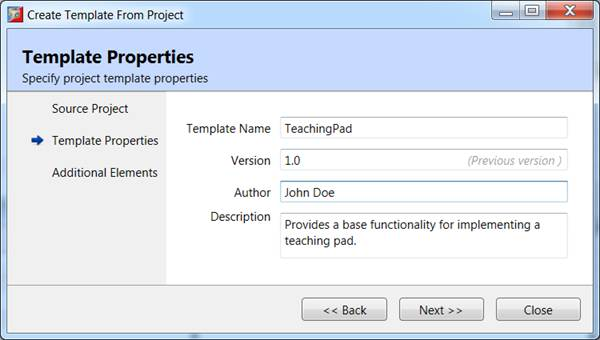
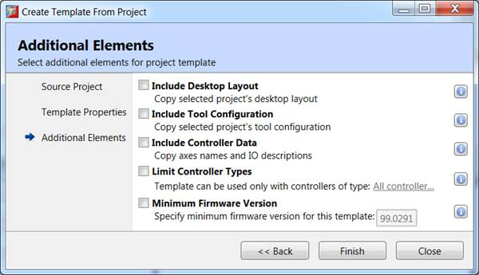

A user template can be created by selecting “Project”->”Templates”->“Save as template” from Motion Perfect’s main menu.
A wizard is displayed to guide the user through the template creation procedure:
In this step a source project is chosen. The default is the current project, but it is possible to change the template source project using the “Browse...” button.
It is possible to exclude some of the project items from the template by unchecking them.
|
Field |
Description |
|
Project path |
The project from which the template will be created. |
|
Browse... |
Browse to change the source project |
|
Select programs to include |
Along with the list below determines which items will be included in the template. |

In this step the author fills information about the template. This information will be shown in the template list.
|
Field |
Description |
|
Template name |
The template name. This is how it will appear in the template list. |
|
Version |
Template version. If previous versions are available then a hit will be displayed. |
|
Author |
The creator of the template. Can be the name of the person responsible for template creation and/or any other relevant information. |
|
Description |
A description of the template purpose and functionality. This information will be displayed along with the template name in the template list. |

Some additional data can be included with the template.
|
Field |
Description |
|
Include Desktop Layout |
Will include also the current Motion Perfect desktop layout (opened tool windows and their positions) |
|
Include Tool Configuration |
Will include tool configuration (like axis parameters in the Axis window, variables in Watch window, etc.) |
|
Include Controller data |
Will include axis names and IO descriptions. |
|
Limit Controller Types |
If the template is applicable to certain controller types those can be specified. |
|
Minimum Firmware Version |
If the template is applicable to certain firmware version(s) those can be specified. |
After all the steps have been completed the template is created and can be used for creating projects. Further management can be done from the template manager .